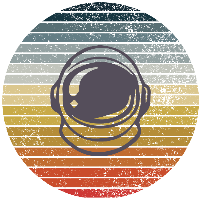

alantech

VC backed company building open source developer tools
projects
- marsha
- A higher-level language that is compiled to Python by LLMs
- sql pal
- An AI pal for your SQL editor that understands your database schema and provides suggestions
- iasql
- Alternative to IaC that manages cloud infrastructure as data in PostgreSQL
- anycloud
- Framework scales an HTTP server + container in any public cloud
- alan language
- An almost Turing complete language with a VM that automatically does concurrency and parallelization